Фотоистория
Как зародилось мотодвижение
В 1938 году эти мотоциклисты выстроились перед магазином в Брисбене, сделали общий снимок и поехали на рыбалку. А ведь за семьдесят лет до этой рыбалки изобретатели ещё пристраивали паровые котлы к велосипедам. Когда у первых ездоков появились попутчики и собственные клубы?
К первым машинам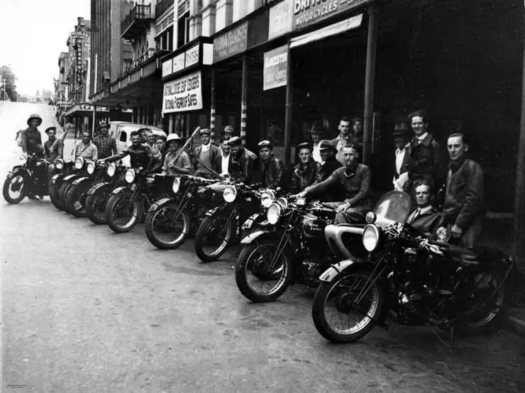
1860-е — 1890-е
Когда у велосипеда появился мотор
У парового велосипеда американца Сильвестра Ропера деревянные колёса, а под седлом — котёл. Прежде чем тронуться, ездок разводил огонь. Примерно в те же годы во Франции Луи-Гийом Перро оснастил паровым двигателем велосипед Мишо. Уже эти две машины объясняют, отчего у мотоцикла несколько «дней рождения».
В 1885 году в Германии Готлиб Даймлер и Вильгельм Майбах испытали бензиновый Reitwagen. Ещё через девять лет фирма Hildebrand & Wolfmüller начала серийный выпуск мотоциклов. Теперь, чтобы отправиться в путь, можно было купить готовую машину. А встретив второго владельца, было о чём поговорить.

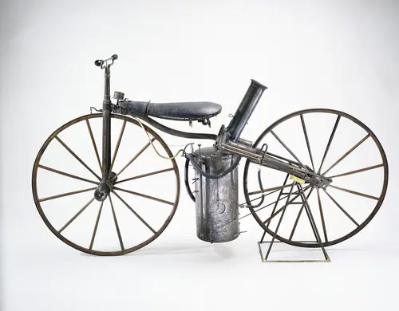

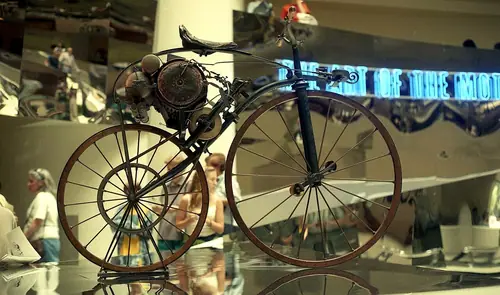


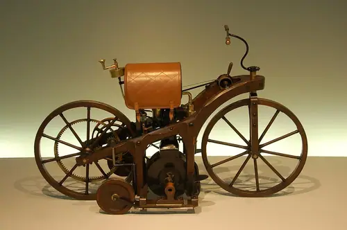


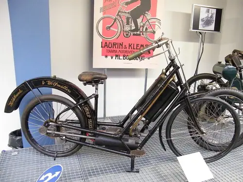


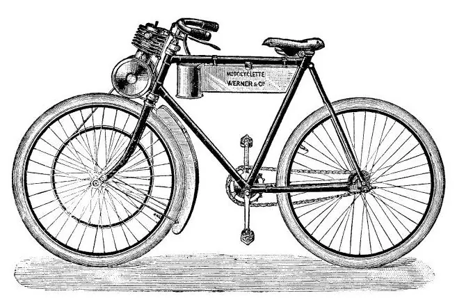
.jpg){kind=link}
.jpg#Licensing){kind=link}

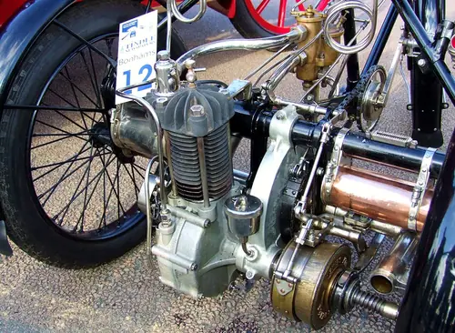
.jpg){kind=link}
1901 — 1930-е
Зачем ездить вместе
У первых клубов были вполне земные заботы. Куда поехать? Как узнать, проходима ли дорога? Как проверить машину на длинной дистанции? Британский Motor Cycling Club, основанный в 1901 году, в 1904-м устроил пробег из Лондона в Эдинбург. Участникам предстояло преодолеть около 640 километров. До финиша добрались меньше половины.
В сентябре 1903 года мотоциклисты собрались в Бруклине и учредили американскую федерацию FAM. Они хотели защищать права владельцев, добиваться лучших дорог и устраивать соревнования. А на клубных панорамах из Калифорнии и Монтаны видно то, что редко попадает в протоколы. Люди приехали, поставили машины в ряд и захотели сохранить память о том, кто тогда был рядом.


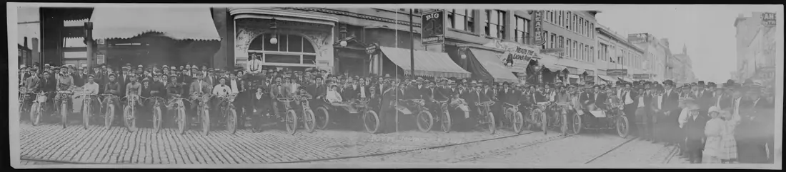

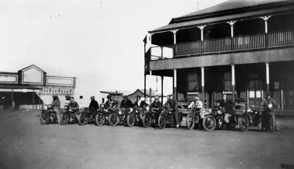

1904 — 1917
О чём спорили первые гонщики
В сентябре 1904 года во французском Дурдане встретились гонщики из пяти стран. Победила Франция. После гонки клубы договорились, что международным соревнованиям нужен общий судья. В декабре того же года в Париже учредили международную федерацию мотоциклетных клубов, предшественницу нынешней FIM.
На первом Tourist Trophy на острове Мэн в 1907 году организаторы разделили машины на одноцилиндровые и двухцилиндровые, а ещё ограничили расход топлива. В своих классах выиграли Чарли Коллиер и Рем Фаулер. Знаменитая горная трасса появилась в программе позже, в 1911-м. За океаном публика тем временем собиралась у грунтовых и деревянных треков.
Источники главы

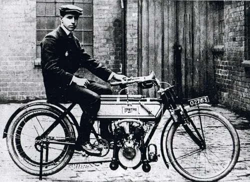


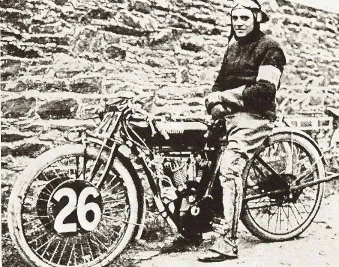


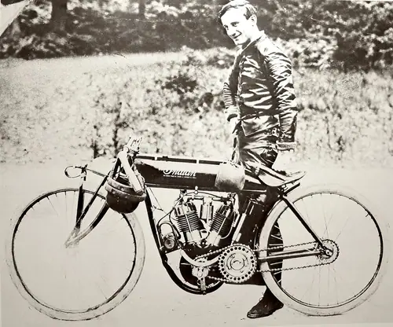


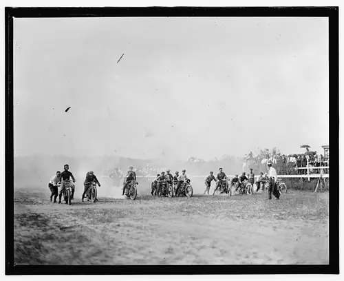


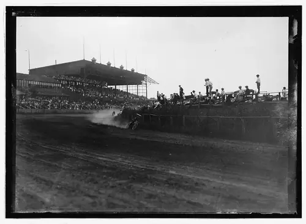
,_1917_LCCN2016851030.jpg#Licensing){kind=link}

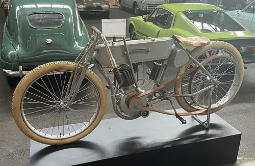

1915 — 1941
Две сестры, два мотоцикла, целый континент
В 1915 году Эффи Хотчкисс выехала из Нью-Йорка в Сан-Франциско. Рядом, в коляске её Harley-Davidson, ехала мать Эвис. Через год с востока на запад отправились Аделин и Августа Ван Бюрен. Сёстры вели каждая свой мотоцикл. На фотографиях из тогдашней прессы можно разглядеть, как они уложили дорожный багаж.
Гонщицы и путешественницы находили друг друга и по почте. В 1930-х американка Линда Дюжо разыскивала мотоциклисток по всей стране, рассылая письма дилерам и знакомым ездокам. Из этой переписки вырос клуб Motor Maids. В 1940 году у клуба была 51 участница. Первым президентом стала гонщица Дот Робинсон. В следующем году клуб получил хартию Американской ассоциации мотоциклистов.

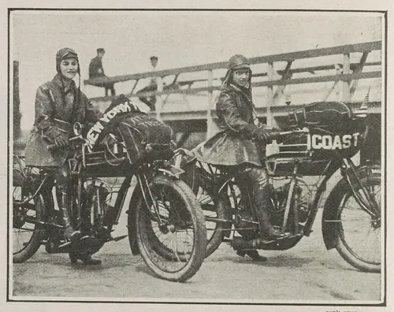


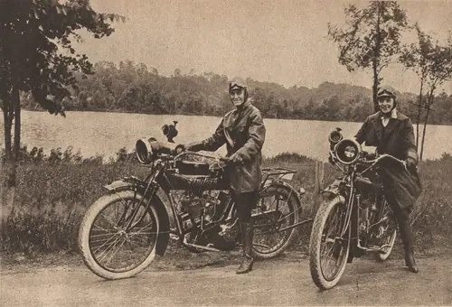


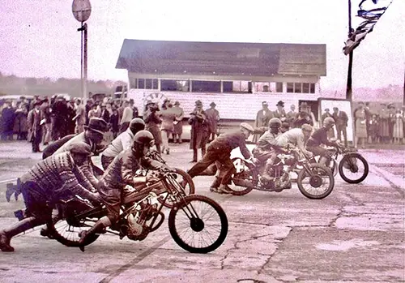


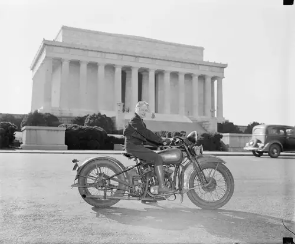


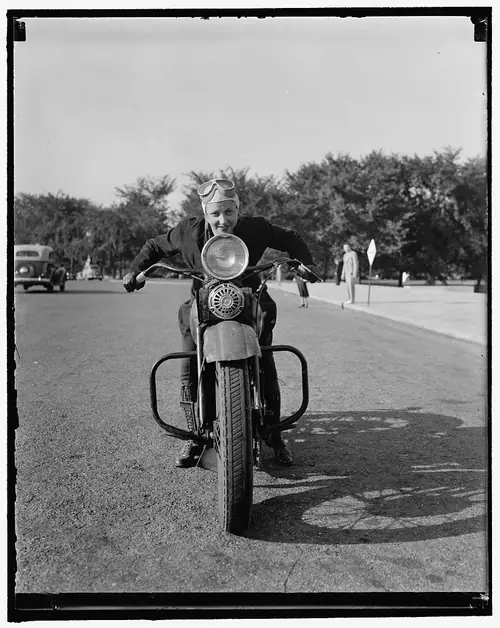

1910-е — 1940-е
Семейная машина и рабочее место
На австралийском снимке у мотоцикла с коляской уместились четверо. Другая фотография, сделанная во Франции в 1917 году, показывает совсем иной дорожный быт. Капрал Ньюшем остановил свой Triumph, разложил карту и ищет дорогу. Он служил связным при британской прессе.
Таких людей редко встретишь в списках победителей. Их работа состояла в том, чтобы доставить донесение или вовремя привезти почту. Рядом с кадрами военных лет — лондонский почтовый мотоцикл и машины, которые сохранил почтовый музей. Самая неприметная часть мотоистории проходила по чьему-то ежедневному маршруту.

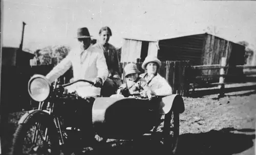


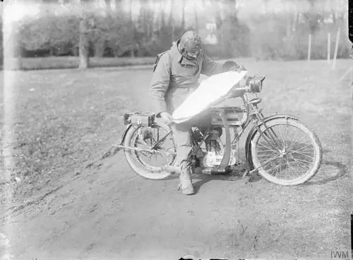


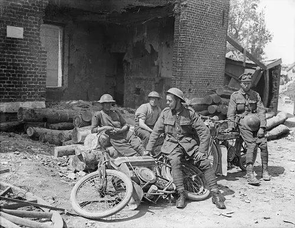


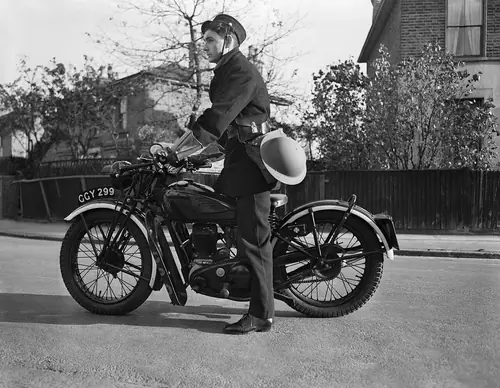


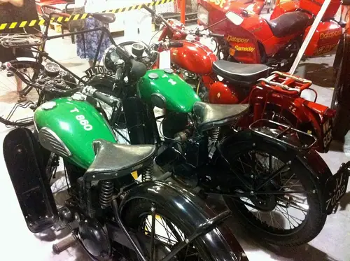

1946 — 1947
Один год, две репутации
Февральской ночью 1947 года участники голландского клуба De Knalpiepers выехали из Меппела к дворцу Сустдейк. Им хотелось первыми поздравить родителей новорождённой принцессы. Тем же летом фотографы находили мотоциклистов на городских улицах и у гоночных ограждений. На снимках из Ассена зрителей порой легче разглядеть, чем самих гонщиков.
В калифорнийском Холлистере июльский слёт того же года запомнился иначе. После беспорядков журнал Life напечатал фотографию мотоциклиста среди бутылок. Для многих читателей она надолго определила, каким выглядит байкер. В нашей подборке Холлистер снят уже в 2007 и 2008 годах. Между газетной историей и этими уличными сценами прошло шесть десятилетий.

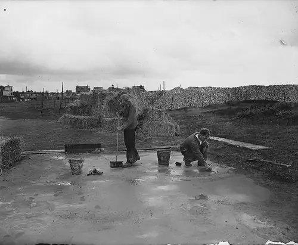

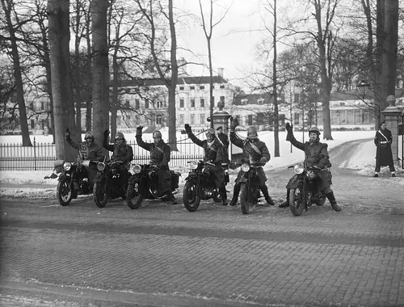

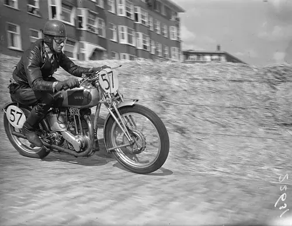

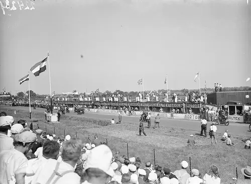

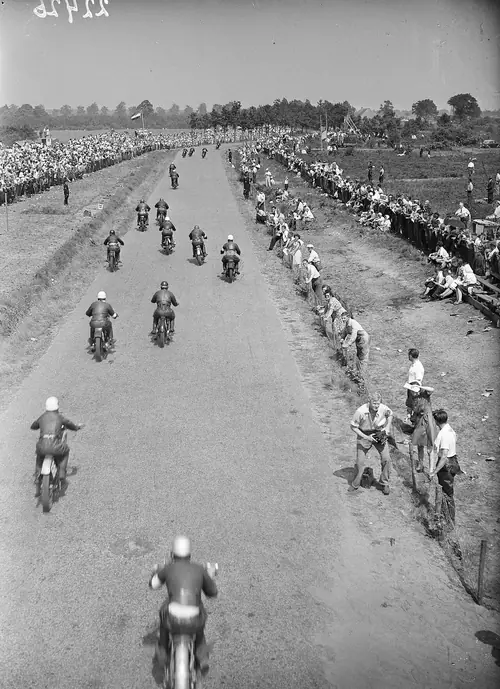

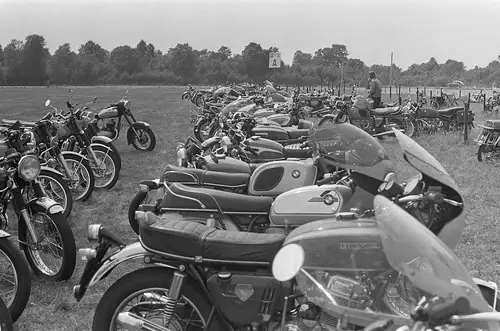

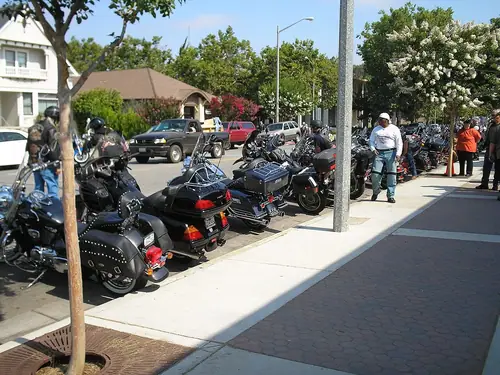


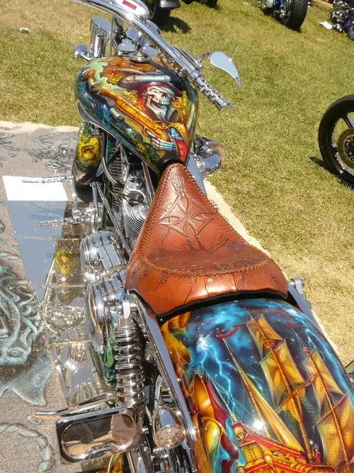

1959 — 1960-е
Священник приезжает в Ace Cafe
По вечерам у лондонского Ace Cafe собирались молодые мотоциклисты. В кафе играл рок-н-ролл, а на парковке можно было вблизи рассмотреть чужую машину. Однажды сюда на своём мотоцикле приехал англиканский священник Билл Шерголд. В Хакни его коллега Джон Оутс ещё в 1959 году открыл приходской молодёжный клуб.
В 1962 году мотоциклисты приехали туда на службу с благословением машин. После этой встречи в 59 Club потянулись новые участники. Его эмблему стали носить на кожаных куртках. В галерее можно увидеть и нашивку, и скромное здание, в котором собирались лондонские рокеры.
Источники главы

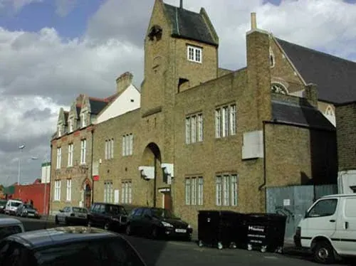


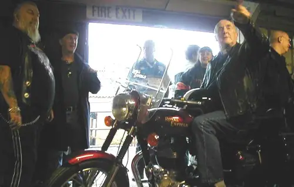


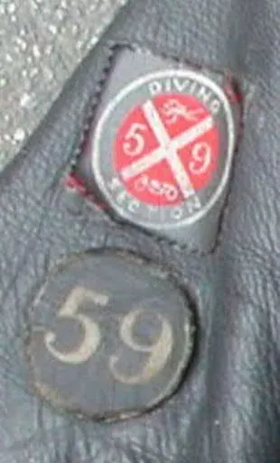


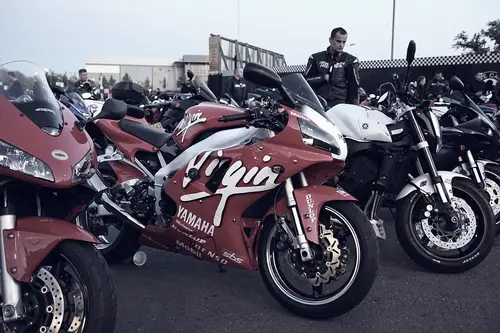

С 1951 года
Что в это время происходило в Минске
В 1951 году на Минском мотовелозаводе начали выпускать М1А. Производство этой лёгкой машины перенесли из Москвы, и модель ещё носила имя «Москва». Следом появились М1М и М-103. На фотографиях ниже три поколения можно сравнить по седлу, баку и приборам, а на последнем снимке «Минск» стоит уже во Вьетнаме.
У белорусской клубной жизни есть и собственные свидетельства. Мотоклуб «Железные братья» ведёт свою историю с 1996 года. На сайте клуба рядом с общими сборами хранятся альбомы отдельных участников и фотографии поездок. Получился тот же семейный альбом дороги, каким столетием раньше были длинные панорамы клубов в Венисе и Бьютте.

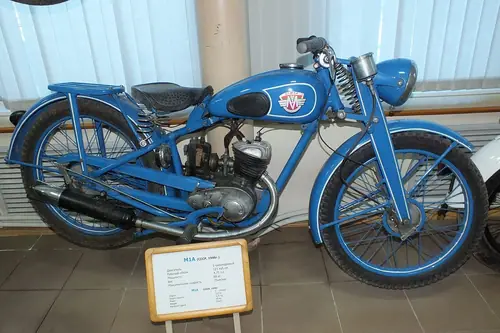


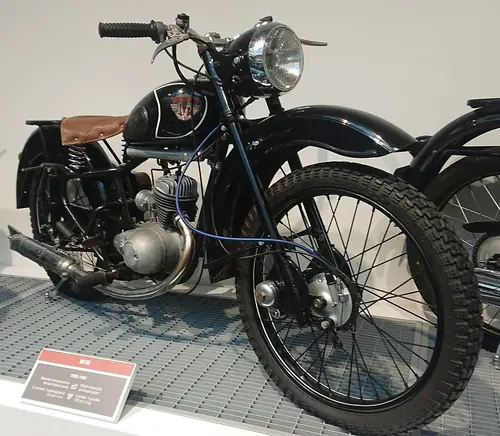


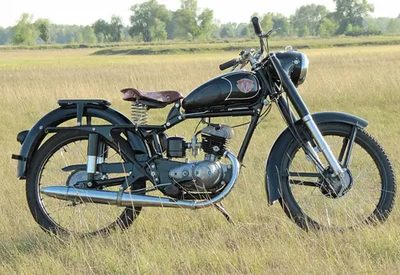


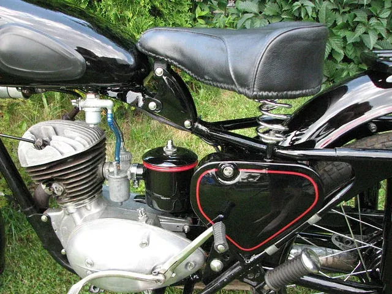


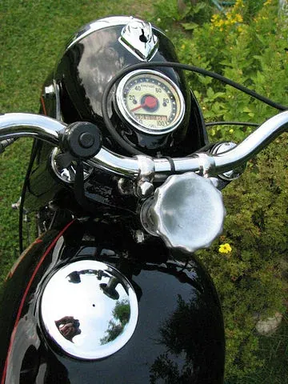


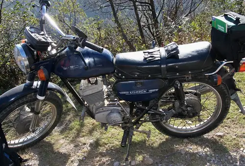